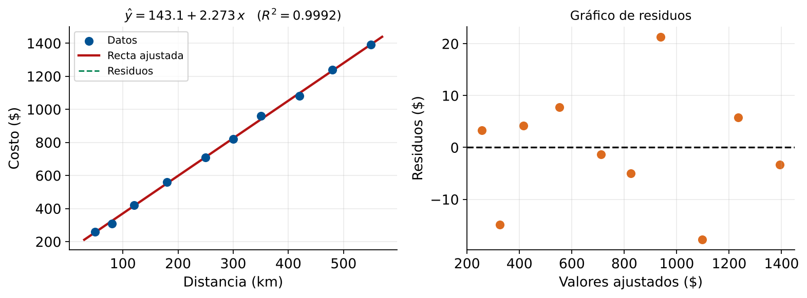
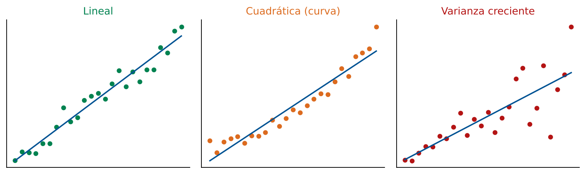

Introducción a Regresión Lineal
Relación entre Variables Logísticas
Módulo 5 — Regresión y Análisis de Datos
Matemáticas 2 — Clase 21
Cátedra de Matemáticas 2
Ingeniería en Logística
Clase 21 — Inicio Módulo 5
Contenidos de la Clase
- Inicio del Módulo 5: De Álgebra a Datos
- Objetivos de Aprendizaje
- El Problema: Datos con Ruido
- Mínimos Cuadrados: La Idea Central
- Interpretación de los Coeficientes
- Residuos: Medir el Ajuste
- Datos del Ejemplo: Rutas de Distribución
- Imagen: Dispersión y Recta de Regresión
- Residuos del Ejemplo
- MATLAB: Ajuste Lineal con polyfit
- MATLAB: Visualización Completa
- MATLAB: Predicción y Uso Práctico
- Coeficiente de Determinación \(R^2\)
- Limitaciones del Modelo Lineal Simple
- ¿Usarías este Modelo para Planificar?
- Regresión como Proyección Ortogonal
- Resumen de Conceptos Clave
- Punto de Decisión
- Tarea para la Clase 22
- Referencias
Inicio del Módulo 5: De Álgebra a Datos
Mod. 1-2
Matrices
Mod. 3
Vectores
Mod. 4
Espacios
Mod. 5
Regresión
Mod. 6-7
Avanzado
Lo que ya sabemos
- Sistemas \(A\mathbf{x}=\mathbf{b}\): solución exacta
- Espacio columna: qué demandas son posibles
- Rango: variables independientes
La nueva pregunta
En datos reales no hay solución exacta.
Si \(\mathbf{b} \notin \text{Col}(A)\)... ¿qué hacemos?
Regresión: buscar la mejor aproximación.
La conexión profunda
La regresión lineal es geométricamente una proyección ortogonal sobre el espacio columna.
Es álgebra lineal aplicada a datos.
Objetivos de Aprendizaje
Al finalizar esta clase el estudiante será capaz de:
- Formular un problema de regresión lineal simple a partir de datos logísticos reales.
- Calcular la recta de regresión usando
polyfit(x,y,1) en MATLAB.
- Interpretar la pendiente y el intercepto en contexto operativo.
- Visualizar los datos, la recta ajustada y los residuos.
- Evaluar si el modelo es adecuado para tomar decisiones de planificación.
Herramienta MATLAB de hoy
polyfit(x, y, 1) — ajuste lineal de mínimos cuadrados
polyval(p, x) — evaluación del polinomio ajustado
scatter / plot — visualización de datos y recta
El Problema: Datos con Ruido
Situación
Se tienen \(n\) pares de datos \((x_i, y_i)\):
- \(x_i\): variable predictora (distancia, tiempo...)
- \(y_i\): variable respuesta (costo, demanda...)
Se sospecha que existe una relación lineal:
\[ y \approx \beta_0 + \beta_1 x \]
Problema: los datos no caen exactamente en una recta.
Hay ruido, errores de medición, variabilidad.
\[ y_i = \beta_0 + \beta_1 x_i + \varepsilon_i \]
donde \(\varepsilon_i\) es el error (residuo).
La recta roja minimiza la suma de cuadrados de los residuos.
Mínimos Cuadrados: La Idea Central
Criterio de Mínimos Cuadrados
Elegir \(\beta_0\) y \(\beta_1\) que minimicen la Suma de Cuadrados de Residuos (SCR):
\[ \text{SCR}(\beta_0,\beta_1) = \sum_{i=1}^{n}(y_i - \beta_0 - \beta_1 x_i)^2 = \|\mathbf{y} - \mathbf{X}\boldsymbol{\beta}\|^2 \]
Interpretación geométrica: \(\mathbf{X}\boldsymbol{\beta}\) es un vector en \(\text{Col}(\mathbf{X})\). Minimizar \(\|\mathbf{y}-\mathbf{X}\boldsymbol{\beta}\|^2\) significa encontrar el vector de Col(\(\mathbf{X}\)) más cercano a \(\mathbf{y}\): la proyección ortogonal de \(\mathbf{y}\) sobre Col(\(\mathbf{X}\)).
Solución analítica (ecuaciones normales)
\[ \hat{\beta}_1 = \frac{\sum(x_i-\bar{x})(y_i-\bar{y})}{\sum(x_i-\bar{x})^2} \qquad \hat{\beta}_0 = \bar{y} - \hat{\beta}_1\bar{x} \]
En MATLAB
p = polyfit(x, y, 1) devuelve p = [beta1, beta0]
y_hat = polyval(p, x) evalúa \(\hat{y} = p(1)\cdot x + p(2)\)
Interpretación de los Coeficientes
\[ \hat{y} = \hat{\beta}_0 + \hat{\beta}_1 \cdot x \]
Pendiente \(\hat{\beta}_1\)
Cambio en \(y\) por cada unidad de \(x\).
Ejemplo: si \(x\) = distancia (km) e \(y\) = costo ($):
\[ \hat{\beta}_1 = 2.3 \;\Rightarrow\; \frac{\$2.3}{\text{km}} \]
Cada km adicional cuesta $2.3 en promedio.
Intercepto \(\hat{\beta}_0\)
Valor de \(y\) cuando \(x = 0\).
En logística: costo fijo de la operación (carga, descarga, administración) independiente de la distancia recorrida.
\[ \hat{\beta}_0 = 150 \;\Rightarrow\; \$150 \text{ fijos} \]
Precaución: extrapolación
El modelo es válido dentro del rango de los datos.
Usar \(\hat{y}\) para \(x\) muy alejado de los datos observados puede dar predicciones sin sentido físico.
Residuos: Medir el Ajuste
\[ e_i = y_i - \hat{y}_i = y_i - (\hat{\beta}_0 + \hat{\beta}_1 x_i) \]
Propiedades de los residuos (MCO)
- \(\sum e_i = 0\) (se compensan)
- \(\sum x_i e_i = 0\) (ortogonalidad)
- \(\bar{e} = 0\)
Gráfico de residuos ideal
- Sin patrón: aleatoriamente dispersos
- Simétricos alrededor de cero
- Sin tendencia ni embudo
Datos del Ejemplo: Rutas de Distribución
Una empresa registra distancia y costo total de 10 envíos:
| Envío | Distancia (km) | Costo ($) | Envío | Distancia (km) | Costo ($) |
|---|
| 1 | 50 | 260 | 6 | 300 | 820 |
| 2 | 80 | 310 | 7 | 350 | 960 |
| 3 | 120 | 420 | 8 | 420 | 1080 |
| 4 | 180 | 560 | 9 | 480 | 1240 |
| 5 | 250 | 710 | 10 | 550 | 1390 |
Medias: \(\bar{x} = 278\) km, \(\quad\bar{y} = \$775\)
Calcular manualmente:
\[ \hat{\beta}_1 = \frac{\sum(x_i-\bar{x})(y_i-\bar{y})}{\sum(x_i-\bar{x})^2} = \frac{607{,}300}{267{,}160} \approx 2.273 \;\frac{\$}{\text{km}} \]
\[ \hat{\beta}_0 = 775 - 2.273 \times 278 \approx 143.1 \;\$ \]
Modelo ajustado
\(\hat{y} = 143.1 + 2.273\,x\) Costo fijo ≈ $143 + $2.27 por km adicional.
Dispersión y Recta de Regresión

Generado con los datos de la tabla (equivalente a la Sección 2 de clase21_regresion.m)
Qué observar
- Puntos cerca de la recta: buen ajuste lineal
- Residuos pequeños y sin patrón
- Relación positiva clara
Preguntas al ver el gráfico
¿Hay algún punto muy alejado?
¿La relación parece realmente lineal?
¿Hay heterocedasticidad?
Residuos del Ejemplo
Cálculo de residuos para los 10 envíos:
| Envío | \(x_i\) | \(y_i\) | \(\hat{y}_i\) | Residuo \(e_i\) |
|---|
| 1 | 50 | 260 | 256.7 | +3.3 |
| 2 | 80 | 310 | 324.9 | -14.9 |
| 3 | 120 | 420 | 415.8 | +4.2 |
| 4 | 180 | 560 | 552.2 | +7.8 |
| 5 | 250 | 710 | 711.4 | -1.4 |
| 6 | 300 | 820 | 825.0 | -5.0 |
| 7 | 350 | 960 | 938.7 | +21.3 |
| 8 | 420 | 1080 | 1097.8 | -17.8 |
| 9 | 480 | 1240 | 1234.2 | +5.8 |
| 10 | 550 | 1390 | 1393.3 | -3.3 |
Verificación
\(\sum e_i \approx 0\) ✓
Residuos en rango \([-18, +21]\)
Sin patrón claro: modelo adecuado
Interpretación práctica
El error típico del modelo es ≈ ±$11 por envío (desv. estándar de los residuos).
Para planificar presupuestos de $1.000, eso es ≈ ±1.1%.
MATLAB: Ajuste Lineal con polyfit
% Datos: distancia (km) y costo ($)
x = [50 80 120 180 250 300 350 420 480 550]';
y = [260 310 420 560 710 820 960 1080 1240 1390]';
% Ajuste lineal (grado 1)
p = polyfit(x, y, 1);
beta1 = p(1); % pendiente
beta0 = p(2); % intercepto
fprintf('Pendiente b1 = %.4f $/km\n', beta1)
fprintf('Intercepto b0 = %.4f $\n', beta0)
fprintf('Modelo: y = %.2f + %.2f*x\n', beta0, beta1)
% Valores ajustados
y_hat = polyval(p, x);
% Residuos
e = y - y_hat;
fprintf('\nSuma de residuos: %.6f\n', sum(e))
fprintf('SCR (Suma Cuad Residuos): %.2f\n', sum(e.^2))
Resultado esperado
b1 = 2.2732 $/kmb0 = 143.06 $suma e = 0.000000SCR = 1154.08
Qué devuelve polyfit
p(1) = \(\hat{\beta}_1\) (pendiente)
p(2) = \(\hat{\beta}_0\) (intercepto)
Orden: de mayor a menor grado.
MATLAB: Visualización Completa
% Grafico con recta y residuos
figure('Name','Regresion Lineal - Distancia vs Costo',...
'Position',[100 100 900 400]);
% --- Subplot 1: Dispersion + recta ---
subplot(1,2,1)
scatter(x, y, 60, [0 0.45 0.74], 'filled'); hold on
x_plot = linspace(min(x)-20, max(x)+20, 200);
plot(x_plot, polyval(p, x_plot), 'r-', 'LineWidth', 2)
% Dibujar residuos
for i = 1:length(x)
plot([x(i) x(i)], [y(i) y_hat(i)], 'g--', 'LineWidth', 1)
end
xlabel('Distancia (km)'); ylabel('Costo ($)');
title('Dispersion y recta de regresion');
legend('Datos','Recta ajustada','Residuos','Location','northwest');
grid on
% --- Subplot 2: Grafico de residuos ---
subplot(1,2,2)
scatter(y_hat, e, 60, [0.85 0.33 0.10], 'filled')
yline(0, 'k--', 'LineWidth', 1.5)
xlabel('Valores ajustados'); ylabel('Residuos ($)');
title('Grafico de residuos');
grid on
MATLAB: Predicción y Uso Práctico
% Prediccion para nuevas distancias
nuevas_distancias = [100; 200; 400; 600];
costos_pred = polyval(p, nuevas_distancias);
fprintf('=== PREDICCIONES DEL MODELO ===\n')
fprintf('%-20s %-20s\n','Distancia (km)','Costo predicho ($)')
fprintf('%s\n', repmat('-',42,1))
for i = 1:length(nuevas_distancias)
fprintf('%-20d %-20.2f\n',...
nuevas_distancias(i), costos_pred(i))
end
% Intervalo de confianza aproximado (+/- 2*std(e))
sigma_e = std(e);
fprintf('\nError tipico del modelo: +/- $%.2f\n', sigma_e)
fprintf('Intervalo aproximado (95%%): +/- $%.2f\n', 2*sigma_e)
% Planificacion de presupuesto
distancia_nueva = 380; % km
costo_estimado = polyval(p, distancia_nueva);
fprintf('\nPresupuesto para ruta de %d km:\n', distancia_nueva)
fprintf(' Estimado: $%.2f\n', costo_estimado)
fprintf(' Rango 95%%: [$%.2f, $%.2f]\n',...
costo_estimado - 2*sigma_e, costo_estimado + 2*sigma_e)
Uso directo en decisión
Si el presupuesto disponible es $1.100 y la ruta tiene 380 km:
el modelo predice ≈ $1.007 (rango 95%: ≈ [$984, $1.029]) — dentro del presupuesto con margen de seguridad.
Coeficiente de Determinación \(R^2\)
Definición
\[ R^2 = 1 - \frac{\text{SCR}}{\text{SCT}} = 1 - \frac{\sum(y_i-\hat{y}_i)^2}{\sum(y_i-\bar{y})^2} \]
Proporción de la variabilidad de \(y\) explicada por el modelo.
Interpretación
- \(R^2 = 1\): ajuste perfecto (todos los puntos en la recta)
- \(R^2 = 0\): el modelo no explica nada
- \(R^2 = 0.95\): el modelo explica el 95% de la variabilidad
Para el ejemplo
\[ \text{SCR} = 1154.1 \qquad \text{SCT} = 1{,}381{,}650 \]
\[ R^2 = 1 - \frac{1154.1}{1{,}381{,}650} \approx 0.9992 \]
El modelo explica el 99.92% de la variación en costos.
En MATLAB
SS_res = sum(e.^2);
SS_tot = sum((y - mean(y)).^2);
R2 = 1 - SS_res/SS_tot;
Limitaciones del Modelo Lineal Simple
El modelo \(\hat{y} = \beta_0 + \beta_1 x\) asume:
- Relación lineal entre \(x\) e \(y\)
- Errores de media cero
- Errores de varianza constante (homocedasticidad)
- Errores independientes entre observaciones
En logística, pueden aparecer:
- Relaciones no lineales (curvas de demanda)
- Costos que crecen más rápido al aumentar la distancia
- Estacionalidad (picos en fechas especiales)

Recta ajustada (azul) sobre tres tipos de datos: solo el primero cumple los supuestos
Si el gráfico de residuos muestra patrón, el modelo lineal no es adecuado.
Se estudiarán modelos cuadráticos en Clase 25.
¿Usarías este Modelo para Planificar?
Criterios para usar el modelo en decisión
- \(R^2 > 0.80\) para planificación operativa
- \(R^2 > 0.90\) para presupuestación financiera
- Gráfico de residuos sin patrón sistemático
- El rango de predicción cubre el caso de uso
- Los coeficientes tienen sentido económico
Para nuestro ejemplo
- \(R^2 = 0.999\) ✓
- Residuos sin patrón ✓
- Rango: 50–550 km ✓
- \(\beta_1 = \$2.27\)/km: razonable ✓
- \(\beta_0 = \$143\): costo fijo plausible ✓
Conclusión: modelo adecuado para planificar.
Lo que el \(R^2\) NO dice
Un \(R^2\) alto no garantiza causalidad, ni que el modelo sea válido fuera del rango observado, ni que la relación sea lineal para siempre.
Siempre revisar el gráfico de datos y residuos.
Regresión como Proyección Ortogonal
El sistema \(\mathbf{X}\boldsymbol{\beta} = \mathbf{y}\)
en general no tiene solución (más ecuaciones que incógnitas, datos con ruido).
\[ \mathbf{X} = \begin{pmatrix}1 & x_1 \\ 1 & x_2 \\ \vdots & \vdots \\ 1 & x_n\end{pmatrix} \in \mathbb{R}^{n\times2}, \quad \mathbf{y} \in \mathbb{R}^n \]
MCO resuelve las ecuaciones normales
\[ \mathbf{X}^T\mathbf{X}\,\hat{\boldsymbol{\beta}} = \mathbf{X}^T\mathbf{y} \]
La solución \(\hat{\mathbf{y}} = \mathbf{X}\hat{\boldsymbol{\beta}}\) es la proyección de \(\mathbf{y}\) sobre Col(\(\mathbf{X}\)).
\(\mathbf{e} \perp \text{Col}(\mathbf{X})\) (en particular \(\mathbf{e}\perp\hat{\mathbf{y}}\)): el residuo es ortogonal al plano de proyección.
Conexión profunda
Módulo 4 → Módulo 5: el espacio columna de \(\mathbf{X}\) es el subespacio sobre el que proyectamos. La regresión usa los conceptos de Col(\(A\)), Nul(\(A\)) y proyección ortogonal.
Resumen de Conceptos Clave
Modelo de Regresión Lineal Simple
\(\hat{y} = \hat{\beta}_0 + \hat{\beta}_1 x\)
Minimiza \(\sum e_i^2\) (mínimos cuadrados).
\(\hat{\beta}_1\): cambio en \(y\) por unidad de \(x\).
\(\hat{\beta}_0\): valor de \(y\) cuando \(x=0\).
MATLAB
p = polyfit(x, y, 1)
y_hat = polyval(p, x)
e = y - y_hat
R2 = 1 - sum(e.^2)/sum((y-mean(y)).^2)
Evaluación del Modelo
\(R^2\): proporción de variabilidad explicada.
Gráfico de residuos: detectar patrones.
Criterio: \(R^2 > 0.90\) para decisión financiera.
Conexión Módulos 4 y 5
Regresión = proyección ortogonal de \(\mathbf{y}\) sobre Col(\(\mathbf{X}\)).
Álgebra lineal y estadística unidas.
Punto de Decisión
Pregunta de Cierre
Con el modelo ajustado \(\hat{y} = 143 + 2.27\,x\), la empresa necesita planificar el costo de una ruta de 650 km.
¿Usarías este modelo para estimar el presupuesto? ¿Qué riesgos identificas? ¿Qué información adicional pedirías?
El modelo predice
\(\hat{y}(650) = 143.1 + 2.273\times650\)
≈ $1.621
Con error típico ±$11 (válido solo dentro del rango).
Riesgo de extrapolación
650 km está fuera del rango observado (50–550 km).
La relación podría no ser lineal más allá de 550 km.
Información adicional
Datos de rutas >550 km.
Costos de peaje, hospedaje.
Condiciones de ruta.
Tarea para la Clase 22
Lecturas
- Montgomery, Cap. 2: Regresión lineal simple — inferencia
- Montgomery, Cap. 2.4: Coeficiente de determinación \(R^2\)
Ejercicio preparatorio
Con los datos del ejemplo de clase (distancia vs costo):
- Replicar el análisis en MATLAB con
polyfit.
- Calcular \(R^2\) manualmente y verificar con la fórmula.
- Agregar una ruta con \(x = 650\) km y \(y = \$1.900\) observado.
- ¿Cambia significativamente el modelo? ¿Cómo queda \(R^2\)?
- Graficar los residuos: ¿hay algún punto atípico (outlier)?
Próxima clase 22
Interpretación de coeficientes y bondad del modelo — \(R^2\), análisis de residuos, qué variable priorizar
Referencias
- Montgomery, D.C., Peck, E.A. & Vining, G.G. (2012). Introduction to Linear Regression Analysis (5th ed.). Wiley. Capítulo 1 (Introducción), Capítulo 2 (Regresión simple).
- Lay, D.C., Lay, S.R., McDonald, J.J. (2016). Álgebra Lineal y sus Aplicaciones (5a ed.). Pearson. Cap. 6.5 (Mínimos cuadrados).
- MATLAB Documentation.
polyfit, polyval, scatter. https://www.mathworks.com/help/matlab/
- Material propio: Dataset distancia-costo, Script
clase21_regresion.m.
Matemáticas 2 — Clase 21 | Regresión Lineal Simple
¡Hasta la próxima clase!
Clase 22: Interpretación de Coeficientes y Bondad del Modelo
contacto@mat2logistica.edu